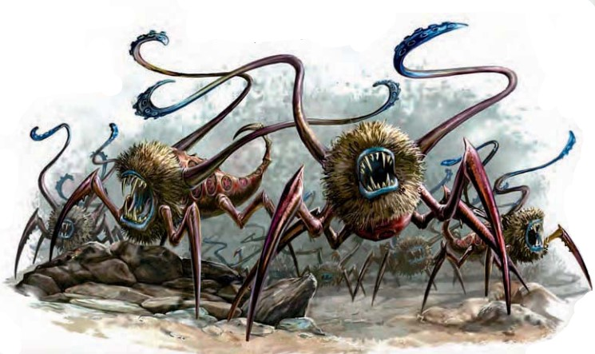

一大群翻涌而来的离奇小生物在地面上穿行，无数小角像触手一样挥舞。它们没有眼睛，身体和嵌满牙齿的血盆大口一样，却准确无误地向你扑来。
| 资料栏位 | 屠法者集群 超小型异怪（集群） |
|---|---|
| 生命骰 | 10d8+10（55HP） |
| 先攻 | +4 |
| 速度 | 20尺（4格），攀爬10尺 |
| 防御等级 | 18(+2体型，+4 敏捷，+2天生)，接触16，措手不及14 |
| 基本攻击/擒抱 | +7/--- |
| 攻击 | 近战 集群（2D6 附加魔法榨取） |
| 全力攻击 | 近战 集群（2D6 附加魔法榨取） |
| 面宽/触及 | 10尺/ 0尺 |
| 特殊攻击 | 驱法灵光，扰乱心神，魔法榨取 |
| 特殊能力 | 目盲，盲感30尺，感知魔法30尺，集群特性，集群弱点，SR 21，挥砍与穿刺伤害减半；免疫 凝视攻击，幻象，视觉效果；集群免疫 |
| 豁免 | 强韧+4，反射+7，意志+8 |
| 属性 | 力量4，敏捷19，体质12 ，智力6，感知12，魅力15 |
| 技能 | 攀爬+5，聆听+12，潜行+6，生存+6 |
| 专长 | 能力专攻（魔法榨取），技能专攻（聆听），隐秘，追踪 |
| 环境 | 见后文（未翻） |
| 组织 | 见后文（未翻） |
| 挑战等级 | 6 |
| 宝物 | 无 |
| 阵营 | 总是守序中立 |
| 进化 | 11-19HD |
| 等级调整 | ― |
屠法者集群包括大约三百只以魔法能量为生的微小怪物。这种生物对所有类型的施法者而言都是灾难。
战斗当屠法者集群探测到附近的魔法灵光时，它会迅速冲向最强的魔法灵光或最强的施法者。它会无休止地攻击，填满目标周围的空间并尽可能地吸取魔法能量。只有当它们被毁灭或法力源头被完全吸干时，他们才会停止。
魔法感知（Su）：屠法者集群可自动探测30尺内的魔法灵光，它同时获知灵光的强度与位置。它也能获知生物所拥有的施法或使用类法术能力（Sp）的能力。
驱法灵光（Su）：屠法者集群的每个行动轮结束时，它可以尝试对处于它占据空间内的，每个生物身上正在生效的随机一个法术或类法术效果进行一次解除魔法检定。这种能力就像法术解除魔法中的区域性解除效果一般生效，除了以下的不同：解除魔法的效果会随机选择正在被影响生物身上的效果，而不是选择施法者等级最高的效果。这项能力不会影响永久魔法物品。每以灵光解除一个法术，屠法者集群会获得相当于法术施法者等级x2的临时生命值。这些临时生命值最多持续24小时，同时集群可以获得的最大临时生命值相当于它本身的最大生命值。获得了最大数量临时生命值并维持24小时后，屠法者集群会进化一个生命骰，并如正常进化一般提升能力。（苍龙：解除魔法的CL没提，应该按照HD，即CL10计算。）
魔法榨取（Su）：除了对占据空间内的生物造成伤害之外，屠法者集群的攻击会抽走他们施法或使用类法术能力的力量，并以吸取来的魔法能量为生。屠法者集群的每个行动轮结束时，在它占据空间内的每个生物必须通过DC19的意志豁免，否则会失去一个准备好的最高级法术或者一个最高级的可用法术位，豁免DC基于意志。拥有类法术能力的生物如果在豁免中失败，则会失去其CL最高能力的一次使用次数。如果其类法术能力可以随意使用，那么其拥有者在一分钟之内不能使用它。如果目标没有准备好的法术，可用法术位，也没有可用的类法术能力，魔法榨取便没有效果。屠法者集群不能选择吸取哪个法术。取决于随机吸取到的法术的等级，屠法者集群获得相当于被吸取法术CLx5的临时生命值。这些临时生命值的共效如同驱法光环中所述一般。
扰乱心神（Ex）：强韧DC16，反胃1轮，豁免DC基于体质。
技能：屠法者集群在攀爬检定上有+8种族加值，而且总可以在攀爬检定上取10，即使注意力被分散或处于危险时也一样。
在知识（地下城）上有级数的人物可以更多地了解屠法者集群。当人物成功通过技能检定时，以下知识将被揭示，其中包括了更低DC的信息。
| 知识（地下城） | 结果 |
|---|---|
| DC 10 | 这种怪物是屠法者集群，一大群超小型异怪。这个结果揭示了其所有异怪与集群特性。 |
| DC 16 | 屠法者集群以魔法能量作为食物。 |
| DC 21 | 对施法能力而言这些生物是重大的威胁。一旦它们开始捕食，它们在消耗掉区域内的一切能量之前不会罢休。 |
| DC 26 | 屠法者集群也许是为了对抗魔法而创造的。一些生物为了某些目的会饲养屠法者集群。 |
一个蠕动着的小型生物群在地面上涌动，数不清的触须如天线般挥舞。这些生物没有眼睛，身体不过是一张布满尖牙的大嘴，但它们毫无阻碍地向你靠近。
| 资料栏位 | 驱法虫群 (Mageripper Swarm) 始终为混乱中立，超小型异怪（集群） |
|---|---|
| 先攻 | +4；感官：盲视、盲感30英尺、魔法感应30英尺；聆听+12 |
| 语言 | 无 |
| 灵光 | 驱散 |
| 防御等级 | 18，接触16，措手不及14（+2体型，+4敏捷，+2天生） |
| 生命骰 | 55（10HD） |
| 抗力 | 穿刺和挥砍武器伤害减半 |
| 免疫 | 凝视攻击、幻术、视觉效果；集群免疫能力 |
| 法术抗力 | 21 |
| 豁免 | 强韧+4，反射+7，意志+8 |
| 弱点 | 集群弱点 |
| 速度 | 20英尺（4格），攀爬10英尺 |
| 近战 | 集群（2d6伤害，外加魔法汲取） |
| 占据/触及 | 10英尺；触及0英尺 |
| 基础攻击加值 | +7；擒抱--- |
| 攻击选项 | 干扰、魔法汲取 |
| 属性 | 力量4，敏捷19，体质12，智力6，感知12，魅力15 |
| 特性SQ | 虫群特性 |
| 专长 | 能力专攻（魔法汲取）、技能专攻（聆听）、隐秘、追踪 |
| 技能 | 攀爬+5，聆听+12，潜行+6，生存+6 |
| 进化 | 11--19HD；见文本 |
魔法感应（Su）：驱法虫群自动检测30英尺内的魔法灵光，能识别每个灵光的强度和位置。它还能检测到具有施法能力或类法术能力的生物。
驱散灵光（Su）：在每个驱法虫群回合结束时，它可以尝试对其范围内每个生物的一个随机进行的法术或类法术效果进行驱散检定。此能力类似解除魔法的区域效果，但有以下区别：被驱散的法术是随机选择的，而非施法者等级最高的法术。该能力对永久性魔法物品无效。每驱散一个法术，虫群获得等同于该法术等级2倍的临时生命值，这些临时生命值最多持续24小时。虫群获得的临时生命值总量不能超过其正常生命值上限。如果虫群达到最大临时生命值并保持24小时，它将提升1HD，并按照进阶规则增加能力。
魔法汲取（Su）：除了对其范围内的生物造成伤害外，驱法虫群还会汲取施法能力和类法术能力，汲取这些魔法能量为食。在虫群回合结束时，其范围内的每个生物必须通过一次DC 19的意志豁免，否则失去其可用的最高等级准备法术或法术位。如果生物使用类法术能力且豁免失败，它将失去该能力一天内的一次使用次数。如果该类法术能力为随意使用，则生物在接下来的1分钟内无法使用该能力。如果目标没有剩余法术位或类法术能力，该能力无效。每汲取一个法术，虫群获得等同于该法术等级5倍的临时生命值，这些生命值按照驱散灵光规则处理。
干扰（Ex）：目标必须通过DC 16的强韧豁免，否则进入反胃状态1轮。豁免DC基于体质。
技能：驱法虫群在攀爬检定中拥有+8种族加值，并始终可以选择攀爬检定取10，即使处于匆忙或威胁状态下。
驱法虫群由大约三百个超小型恐怖生物组成，它们专门寻找并吞噬魔法能量。这些生物是所有施法者的威胁。
策略与战术当驱法虫群感应到附近的魔法灵光时，它会立刻朝最强的灵光或最强的施法者移动。它们攻击不止，将目标吞没并尽可能多地吸取魔法能量。只有在被摧毁或完全耗尽能量来源时，它们才会停止。
典型遭遇驱法虫群总是独自出现，尽管有时它们可能被智慧生物利用，用来对抗施法敌人。如果魔法能量供应充足，多个虫群可能会同时出现在同一片区域，但它们并不会协同作战。
单个（EL 6）：孤身一人的法师埃德加（N阵营，男性人类法师4级）被困在自己的塔中，因为一只驱法虫群发现了他的隐居地。在逃过虫群的首次攻击后，他将自己封闭在内层实验室中。这间没有窗户的房间能够阻挡虫群，但食物和空气的供应有限。偶尔，他会打开门，用灼热射线攻击虫群，但这些攻击不足以彻底击败它。虫群已经占据了他的奥术工作室，那里堆满了完成和未完成的药剂、魔杖等物品。在一次尝试中，埃德加激活了一张夸尔的羽符（鸟），将求救信息送往附近的法师学院。
驱法虫群的知识拥有地城知识技能的角色可以通过成功的检定了解更多关于驱法虫群的信息。角色也可以使用神秘知识技能进行检定，但DC增加5。
| 地城知识 | 结果 |
|---|---|
| DC 10 | 这是驱法虫群，由一群超小型异怪组成。此结果揭示了所有异怪和集群特性。 |
| DC 16 | 驱法虫群以魔法能量为食。 |
| DC 21 | 这些生物对施法活动区域构成严重威胁。一旦开始进食，它们不会停止，直到消耗掉区域内的所有魔法能量。 |
| DC 26 | 驱法虫群可能是为了对抗魔法而被创造出来的。有些生物会饲养虫群以实现这一目的。 |
驱法虫群的构造如此离奇，以至于不太可能是自然演化的产物。大多数学者认为它们是被刻意创造出来的，可能是为某种特定目的服务。驱法虫群依靠非视觉感官来感知环境。构成虫群的生物能够以肉类为食，但它们更偏好魔法能量，并在魔法能量易于获取的地方繁盛。这些虫群对大城市构成了严重威胁，尤其是那些充满魔法活动的区域，如魔法区或经常使用魔法的精灵和妖精聚居地。尽管它们无法吞噬魔法物品中储存的魔法能量，但这些物品的魔法灵光依然吸引着驱法虫群，就像蜡烛的火焰吸引飞蛾一样。这些困惑而饥饿的生物会在物品周围徘徊，直到它们被消灭或找到新的食物来源。
吞噬魔法能量可以让这些生物繁殖，从而增加虫群的规模。单个虫群成员的寿命约为一年，但当虫群吞噬魔法时，其成员数量可以在数天内翻倍。它们通过无性繁殖，从成年体背部长出幼体。如果虫群的规模增长至原来的两倍（即20HD），它会分裂为两个10HD的虫群。一些对魔法怀有敌意的存在会主动鼓励虫群在其领地内栖息。驱法虫群是有效的守卫者，但如果区域内施法者太少，它们会迁往更富饶的觅食地。一些生物还利用虫群来防御魔法攻击。这些饲主有时会对无助的俘虏施放法术，或者俘虏并禁锢施法者，将其作为虫群领地内的食物。
驱法虫群虽然拥有一定的智慧，但更接近捕食者的狡猾。它们能适应新情况并调整战术。尽管主要被觅食和繁殖的本能驱动，驱法虫群仍能对刺激作出调整。如果虫群成员被从虫群中分离，它们会变得迟钝且反应迟缓，很快死亡。
环境驱法虫群可以出现在任何温带环境，且通常被城市地区吸引。它们无法忍受极端的高温或严寒。虫群常常占据法师公会的地窖或古老地下城。
典型体貌特征单个法术剥离虫体长约1英尺，重3到5磅。它们的外形仿佛由一堆毫不相关的部分拼凑而成，包括巨大的咀嚼颚、昆虫般的腿，以及类似幻影兽的触须。其颜色极不自然，呈现病态的紫色、蓝色或粉色。它们身体上圆形的斑点标志着感知魔法能量的特殊器官的位置。
阵营驱法虫群只关心觅食和繁殖。它们并非故意破坏或恶意行事，但行为不可预测，总是混乱中立。
典型财宝驱法虫群不积累金钱或普通财宝，大多数人也不愿意接近这些可怕的小生物。然而，它们往往出现在魔法物品的宝藏附近，尤其是强大魔法灵光所在的区域。驱法虫群的财宝为其挑战等级的两倍，约4000金币，全部为魔法物品。
艾伯伦中的驱法虫群狂热的灰烬誓盟（Ashbound）德鲁伊视所有奥术魔法为非自然，但他们并不提倡滥杀。他们发现驱法虫群是有效的威慑工具。然而，这些生物在艾鲁登原野中并不常见，寻找它们可能需要进入危险的恶魔荒原或影沼。安戴尔的城市中经常爆发驱法虫群的感染，灰烬誓盟的德鲁伊愿意进入城市捕捉这些虫群。哀伤故地中残存的奥术能量和生物法术为驱法虫群提供了肥沃的觅食地。这些生物甚至可能起源于哀嚎之地，或许是哀伤之日后普通害虫的变异产物。
费伦中的驱法虫群深水城的下水道通向无数神秘之地――这些地方是犯罪团伙、怪异邪教和奇特生物的避风港。驱法虫群在这些地方也大量出现，尤其是骷髅港。塞尔红袍法师在整个费伦建立了交易据点，出售稀有且实用的魔法物品。如此大规模的魔法物品集中地吸引了驱法虫群。如何控制这些危险生物始终是红袍法师们头疼的问题。